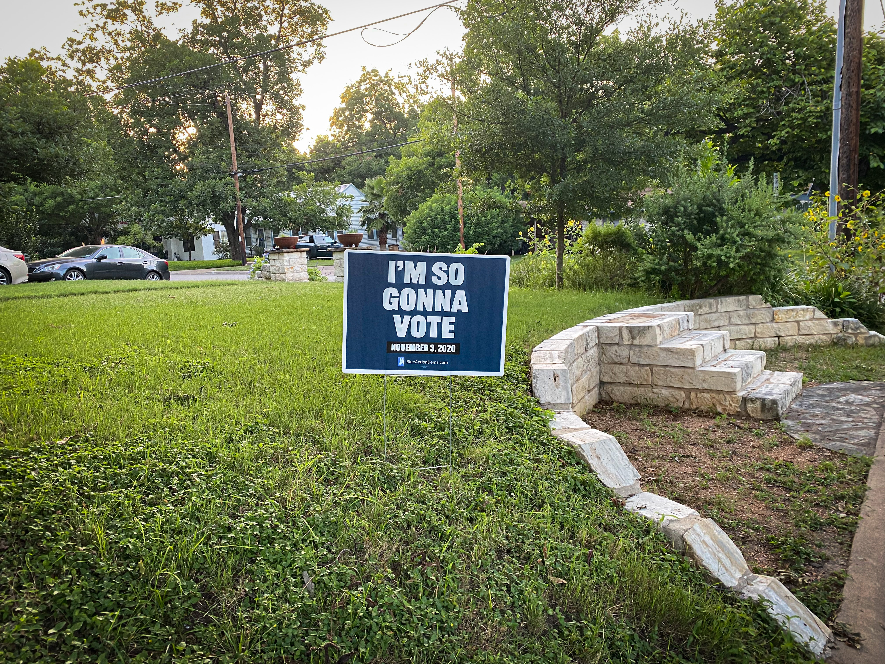

 I know that I only have one vote to give. But I am very, very proud of that vote. I prepare for it ahead of time. I find out who is on each ballot and look into them. I write down my choices so that I don't forget. If I'm going to the polling place, I plan ahead what time I will go. And if I'm voting by mail, I plan ahead to make sure I have a ballot early enough to give me plenty of time to send it back.
So I'm just a voting nerd, right?
No, I am a patriot.
I was never a great student of history in school. But since I've become an adult I've steadily become more and more educated about history. And I've learned that while voting in the USA is a right, it is not an inalienable right. This right can be taken away.
In the history of humans, countless people have fought and died for the right to vote. To vote is to play a part, however small, in your own destiny. Because your government will always impact your life. Sometimes for the better, and sometimes not. Your government has the power to save you from death, and to kill you. To enable you to have a happy life, or to make it miserable. And you only get one life.
Fighting for the right to vote is not ancient history. The USA itself is a relatively recent experiment. And it is not guaranteed to be a successful experiment. The results are not in yet. And even in the US, voting for all people is a continuing struggle.
Yes, we all have the right to vote. Unless we got caught smoking weed twenty years ago. That makes us a felon and in many states that takes away our right to vote.
Yes, we all have the right to vote. Unless so many polling places have been removed that we have to stand in line for hours during which we don't get paid by our very badly needed jobs.
Yes, we all have the right to vote. Unless the state has removed our name from the polling registry, and we have not bothered to check or challenge that decision.
And there are many other reasons you may not be able to vote. You can sit back and throw up your hands. Or you can (non violently) fight it.
Q: “Well, Doctor, what have we got, a republic or a monarchy?”
A: “A republic, if you can keep it.” -- Benjamin Franklin
We don't all have to be politicians. But we do all have to participate in the political process. And the very minimum is an educated vote. Less than that, and you deserve the government you get. And that unchecked government will likely make the only life you get miserable and short. That's not science fiction. That is history, and it threatens to repeat.
Your choice: Human or sheep. Start here.